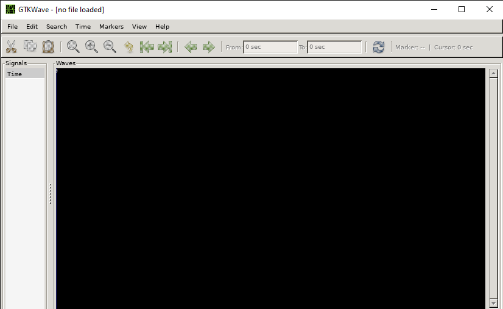
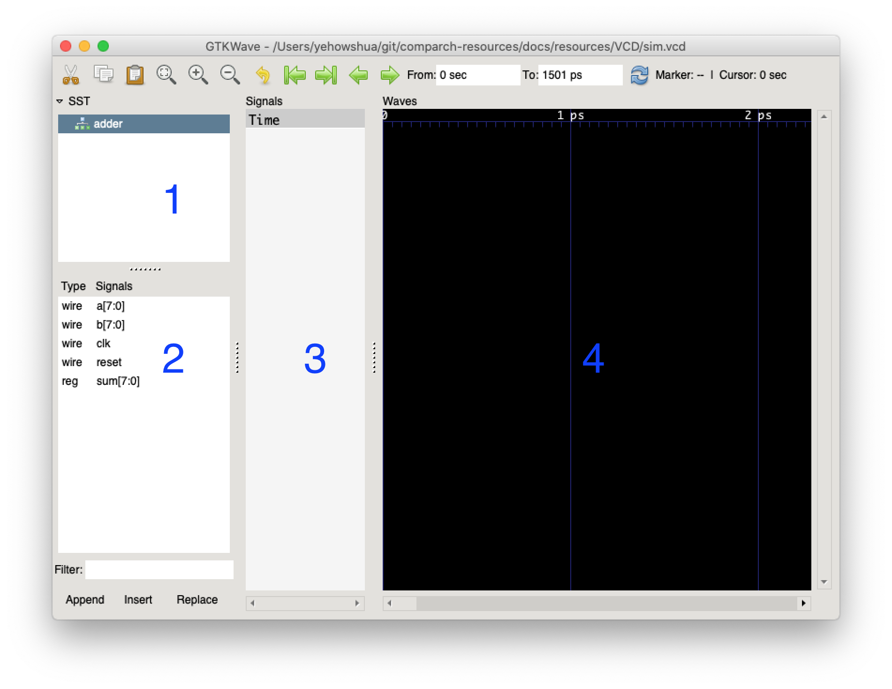
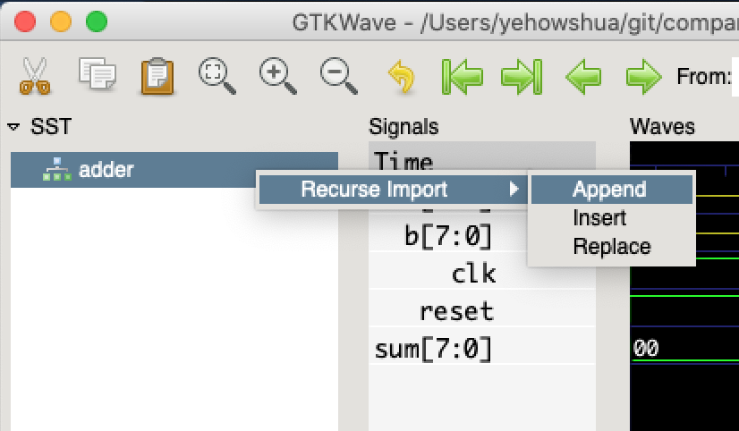
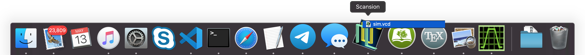
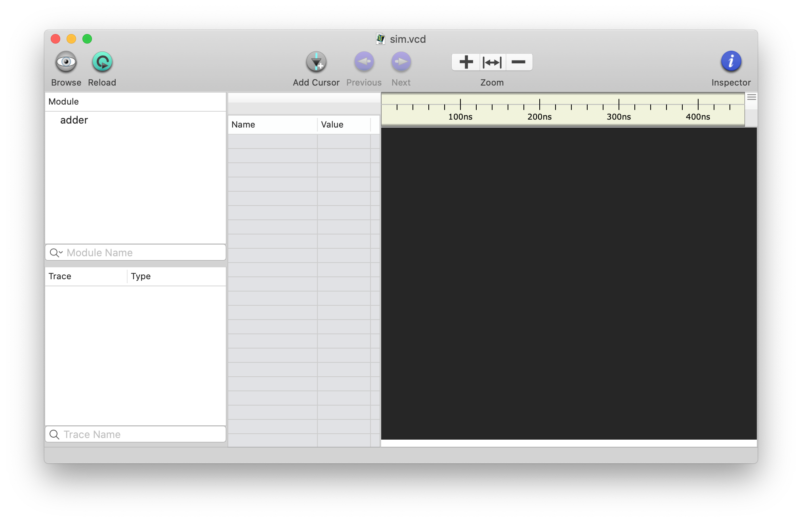
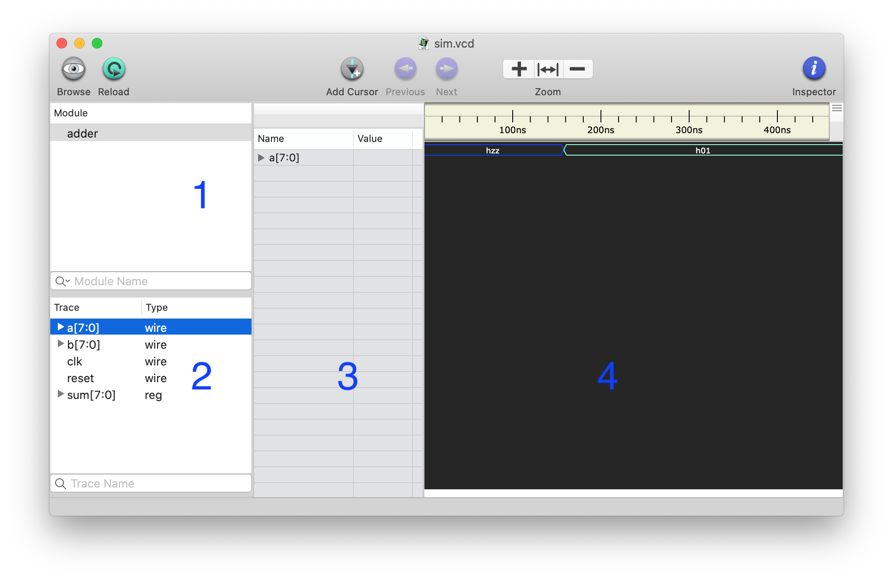
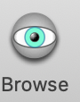

Using GTKWave or Scansion
Author: Yehowshua Immanuel
PDF VersionWhen debugging hardware that you've described in RTL, its often helpful to be able to see a waveform representation of what its doing.
One of the most common waveform viewers is GTKWave. Scansion is also a really good waveform viewer(but its only available for Mac).
I prefer to use Scansion when on my Mac because it supports Mac gestures as well as HiDPI displays.
Installing GTKWave¶
Ubuntu¶
apt install gtkwaveBy default, you cannot view the display in bash for windows. To remedy this, do the following in bash for windows :
export DISPLAY=:0You'll also need to download, install, and open Xming. Once you open Xming, it should start a process in the backgroung.
Now, go ahead and type gtkwave. A new window should open like
the one in the image below.

MacOS¶
Download the GTKWave app for MacOS:
Once the app has downloaded, drag the app from your Downloads
folder to your Aplications folder.
Viewing a Waveform with GTKWave¶
To open a waveform with GTKWave on Linux, run
gtkwave /path/to/wave.vcd.
On Mac, if you're using GTKWave, you can open the GTKWave application, and then use file \rightarrow open new window to access the file.
Download this VCD and complete the following steps.
Drag some signals from pane 2 to pane 3 as shown below.

You can also import all signals at once as shown below.

GTKWave tends to zoom all the way in on signals at first. You must click the icon below multiple time to zoom out properly.
Using Scansion instead of GTKWave on Mac¶
You can download Scansion from here.
Drag it to the /Applications folder. Once you've opened
Scansion, you can drag a VCD file from finder onto the Scansion
icon as shown below.

A new Scansion window should show up.

You can view signals by dragging them from 2 to 3 as shown below.

You can also view all the signals at once for a selected module from pane 1 by clicking the browse button.
